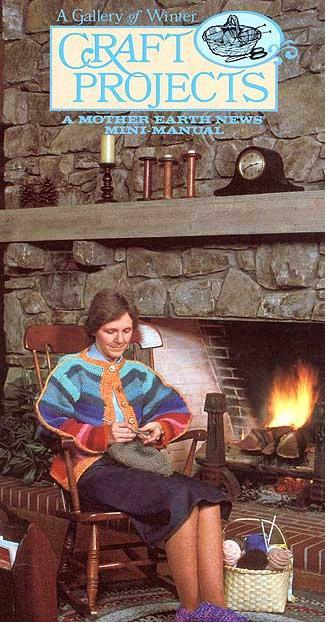
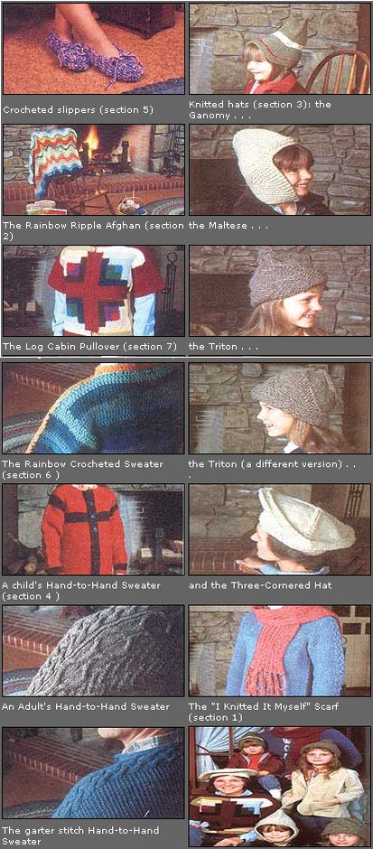

WELCOME . . . to our mini-manual of winter craft projects. The following 12 pages contain something for knitters and crocheters of every level of skill, from an easy scarf to a multi-cabled sweater. (There's also an illustrated section explaining the basics of both arts to aid the novice and to help jar the memory of the rusty.)
Of course, there may, be a few people who initially won't be enthusiastic about such enterprises. "Why knit?" a noncraftsperson may grumble as he or she watches-fascinated nonetheless-while brilliant-hued Fair Isle sweaters, intricate fisherman's jerseys, or complicated cable pullovers emerge from an experienced knitter's speedily clicking needles. Well, aside from the satisfaction of creating a beautiful garment, knitting offers you the chance to do it better for less: We figured out from a yarn-sample card that an Icelandic sweater (retailing for $125) could be knitted for about $25 in yarn!
To be sure, that's using your own labor, but what kind of price can you attach to what might otherwise be wasted time, anyway? You see, one of the marvelous benefits of knitting is that it can be practiced anywhere and anytime a person has a few spare minutes. Who hasn't envied a needle clicker during a long, boring town meeting, political speech, or other obligatory function? That person's twiddling up something useful while many other folks are twiddling only their thumbs!
Crocheting (the needle-arts cousin of knitting) has delighted advocates, too. Some folks prefer crocheting, because it is faster than knitting . . . and, since it involves using only one needle, it is a bit easier to learn. (Many wise craftspersons learn both arts and then are able to employ whichever one is appropriate for the project they're undertaking.)
So draw a good light close by your favorite easy chair, throw another log on the fire, and lean back and dig into this mini-manual. For the price of a few hours of your time and a few dollars for the basic supplies, you can have a rewarding pastime to enrich the rest of your life.
|
 |
 |
|